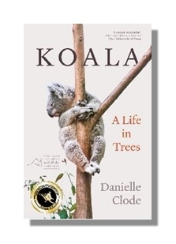

Koala: A life in trees
'This is the book I've been waiting for - for 40 years.'
Sy Montgomery, author of The Soul of an Octopus
Despite their iconic status and celebrity, koalas remain something of a mystery. Often affectionate in captivity, they seek out human assistance when in need of water or care yet can also be fierce and belligerent. They are beloved worldwide and feature in popular children’s stories, but are also plagued by sexually transmitted diseases and maligned for a lack of intelligence. Their diet consists solely of leaves that are full of toxins. In some states they are threatened with extinction, while in others they are dying from overpopulation.
Fuelled by her biologist’s background and deep curiosity, Danielle Clode delves into the world of koalas to discover what’s behind the sweet face on thousands of postcards. From their megafaunal ancestors to the disastrous effects of colonisation, from remarkable conservation success in the 1920s to the devastating bushfires of 2019–2020, Clode tells the story of koalas and their complex relationship with humans. Sharing the latest scientific insights and myth-busting facts, all woven through Clode’s award-winning storytelling, Koala takes readers up into the trees to reveal the truth about this extraordinary animal and what must be done to ensure its survival.
Winner of the 2023 Whitley Award for Popular Ecology
Published by Black Inc (Aust/NZ) and by WW Norton (Rest of World)
Available in paperback, ebook and audiobook.
Buy now from US/UK
Praise for Koala
‘Clode is a master at popularising science and making the complex understandable …This is natural history and science writing at its best.’ —Peter Menkhorst, Australian Book Review
'Danielle Clode has written one of the brightest, most enjoyable popular natural histories of the koala ever done' —Steve Donoghue, Open Letters Review
'There isn't much about koalas that isn't in Danielle Clode's book. She is one of our great nature writers . . . poetic, evocative and moving.' —Nick Mattiske, Insights Magazine
‘Danielle Clode, a natural storyteller, has written an insightful book that deepens our understanding of this fascinating animal and highlights the urgency of its survival.’ —Peter Wohlleben, author of The Hidden Life of Trees
‘A vividly written and thoroughly researched celebration of the lives of koalas. . . an invitation to honour and protect these extraordinary animals.’ —David George Haskell, author of Sounds Wild and Broken
'Clode is a perfect guide for this journey - passionate and knowledgeable, curious and careful’ —Ashley Hay, author of Gum: The Story of Eucalypts and their Champions
'Clode the natural scholar sets out in the way she knows best to understand the everyday sensory reality of this charismatic yet obdurate marsupial ' —Gregory Day, Sydney Morning Herald
'A vivid journey into a fascinating corner of the natural world ' —Kirkus Reviews